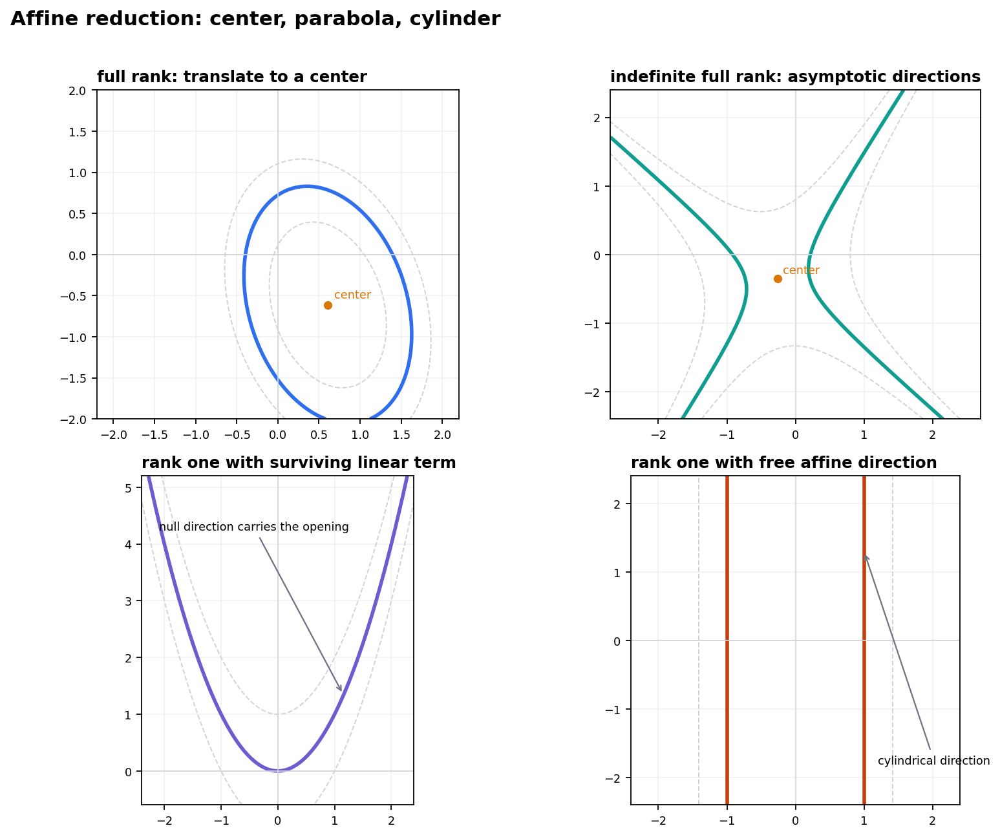
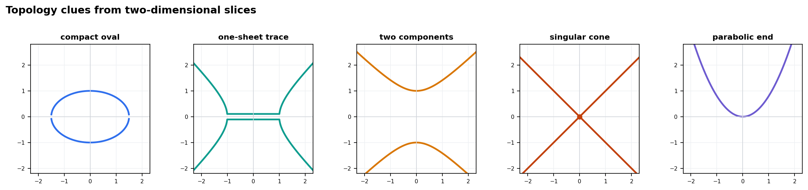
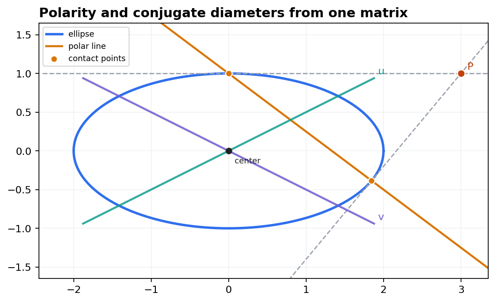
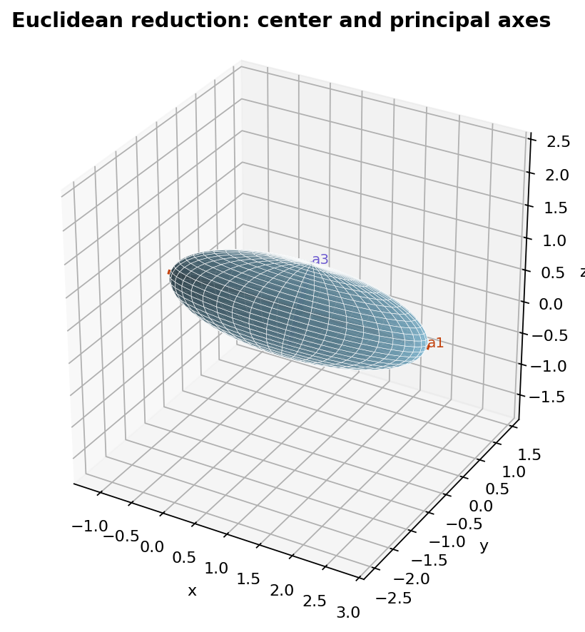

Geometry II, Chapter 15
Affine Quadrics
Classify second-degree affine equations by reducing the quadratic form, tracking the surviving linear term, and reading topology, polarity, and Euclidean axes from the same matrix data.
Chapter route
Reduction Workflow: Equation To Geometry
\(q(x)=x^T A x+2b^T x+c\)
The classification is procedural: reduce the expression, name the remaining invariant, then test the drawing against the equation.
What Affine Maps Preserve
- incidence, parallelism, centers, and directions at infinity
- rank and degeneracy of the quadratic part under congruence
- whether a null direction carries a residual linear term
- not lengths, angles, or numerical axis lengths
Affine algebra
The Translation Identity Locates Centers
\[ q(x_0+y)=y^T A y+2(Ax_0+b)^T y+q(x_0) \]
Center Criterion
A point \(x_0\) is a center exactly when \(Ax_0+b=0\). If \(A\) is invertible the center is unique; if \(A\) has a nullspace, there may be no center or a whole affine family of centers.
Completing squares as a picture
Centers, Asymptotes, Parabolas, Cylinders

If a vector \(v\) lies in \(\ker A\), the quadratic term cannot control motion along \(v\). A remaining linear term in that direction opens the quadric like a parabola.
Four Readings
- full rank plus center gives a centered oval or hyperbola
- mixed signs introduce escape directions and asymptotes
- rank one plus linear null term gives a parabola
- rank one without that term leaves a cylinder direction
{kind=link}
Classification as executable data
A Normal-Form Ledger Beats A Memorized List
Checklist
- Reduce \(A\) by congruence and record rank.
- Over \(\mathbb R\), record signature of the diagonal part.
- Translate away linear terms in the image of \(A\).
- Inspect the remaining terms on \(\ker A\).
- Normalize the constant level and decide if real points exist.
| Model | Matrix Data | Geometry |
|---|---|---|
| ellipsoid | full rank, one sign, positive level | compact when all variables constrained |
| one-sheet hyperboloid | full rank, mixed signs | connected with escape directions |
| two-sheet hyperboloid | full rank, opposite level choice | two connected components |
| cone | mixed form, zero level | singular at the center |
| paraboloid | rank deficient with residual linear term | no center, one opening direction |
| cylinder | rank deficient without residual term | base conic times an affine line |
Over \(\mathbb C\), signs can be rescaled away. Over \(\mathbb R\), signs decide empty, compact, connected, split, and singular cases.
Three-dimensional models
Signs Become Shapes Before Names Become Useful
Positive definite levels close up; mixed signs leave escape directions; zero levels of mixed forms can become singular cones; deficient rank plus a linear null term becomes parabolic.
Interactive Artifact
The notebook's surface gallery lets the learner rotate standard three-dimensional normal forms. Rotation is useful because connectedness and ends can be hidden by a single view.
Topology from slices
Normal Form Predicts The Topological Type

Classification tells whether real points exist, whether the object is compact, whether components split, and where singularities appear.
compact when every direction is bounded by the same sign.
mixed signs but connected through the omitted circular direction.
level choice separates the two branches into components.
zero level exposes the singular center.
{kind=link}
Polarity
Homogenization Turns The Same Equation Into A Polar Machine

\[ X^T C X=0,\qquad X=(x,1) \]
\[ \operatorname{polar}(P):\ (CP)^T X=0 \]
Affine Readings
- point on the quadric gives the tangent hyperplane
- external point gives the chord of contact in conics
- centered directions \(u,v\) are conjugate when \(u^TAv=0\)
{kind=link}
One bilinear form, two geometries
Tangent Planes And Conjugate Diameters Share The Matrix
If \(p\) lies on \(q(x)=0\), then the tangent hyperplane is
\[ (Ap+b)^T(x-p)=0. \]
Proof Roadmap
- differentiate \(q(p+t v)\) at \(t=0\)
- use \(q(p)=0\) to isolate first-order contact
- write all tangent directions \(v\) satisfying \((Ap+b)^T v=0\)
For a centered quadric, the bilinear form \(B(u,v)=u^TAv\) controls paired diameter directions.
\[ u\ \hbox{conjugate to}\ v \quad\Longleftrightarrow\quad u^TAv=0. \]
Geometric Meaning
Parallel chords in one direction have midpoints lying in a diameter hyperplane. The conjugate direction is the direction whose chords that diameter bisects.
Euclidean refinement
Euclidean Structure Adds Measured Axes

\[ \lambda_1 y_1^2+\lambda_2 y_2^2+\lambda_3 y_3^2=-q(x_0) \]
When all \(\lambda_i\) and \(-q(x_0)\) are positive, the semi-axis lengths are \(a_i=\sqrt{-q(x_0)/\lambda_i}\).
Affine Versus Euclidean
- affine maps preserve type but can change lengths and angles
- Euclidean rotations preserve lengths and reveal principal axes
- axis lengths are numerical invariants only after a metric is fixed
{kind=link}
Applied lab
Classify A Rotated Ellipsoid From Coefficients And Samples
Lab Protocol
- Receive \(A,b,c\) from a fitted quadratic equation.
- Symmetrize \(A\) and solve \(Ax_0+b=0\).
- Rotate into an eigenbasis of \(A\).
- Evaluate residuals on sampled surface points.
- Normalize by axis lengths and check \(\sum_i (y_i/a_i)^2=1\).
The computational goal is not a pretty plot alone. The reduced equation and residuals certify that the visualized ellipsoid really matches the algebraic classification.
Mental checks
Common Pitfalls In Affine Quadric Classification
Diagonal is not reduced. Linear terms can remain, especially along \(\ker A\).
A center need not lie on the quadric. It is a gradient-balancing point, not automatically a surface point.
Same \(A\), different level. A cone and nearby hyperboloids can share the quadratic part.
Real signs matter. Over \(\mathbb R\), signs decide empty, compact, split, and connected cases.
Before naming a quadric, ask three questions: does \(Ax+b=0\) have a solution, what is the signature of \(A\), and what remains on the nullspace?
Metric Caution
Affine equivalence can erase axis lengths. Euclidean equivalence cannot. Do not report semi-axis lengths as affine invariants.
In-class exercise
Exercise: Diagnose The Affine Type Before Plotting
Classify the real affine quadric in \(\mathbb R^3\):
\[ x^2+2y^2-4z+3=0. \]
Find whether it has a center, identify the null direction behavior, and name the expected topology.
Discussion Prompt
What information is visible from \(A=\operatorname{diag}(1,2,0)\), and what information is carried only by the linear term in \(z\)?
Takeaways
Affine Quadrics: The Five-Part Habit
Reduction
- Start with \(q(x)=x^TAx+2b^Tx+c\) and symmetrize \(A\).
- Use \(Ax_0+b=0\) to decide whether a center exists.
- Inspect \(\ker A\) before declaring the equation reduced.
- Use rank, signature, and level to predict topology.
- Homogenize for polarity; diagonalize orthogonally for Euclidean axes.
Reduce the equation, draw the normal form, and then check the drawing numerically. That loop keeps the classification table attached to geometry.
type, centers, parallelism, directions at infinity.
polars, tangents, contact chords after homogenization.
orthogonal axes and measured semi-axis lengths.
residual checks that certify the classification.